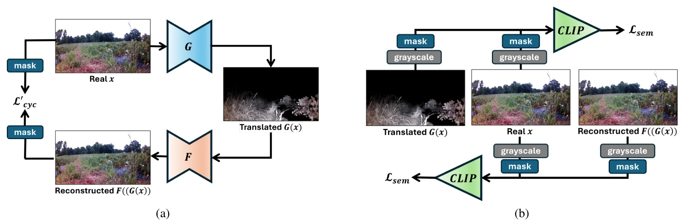
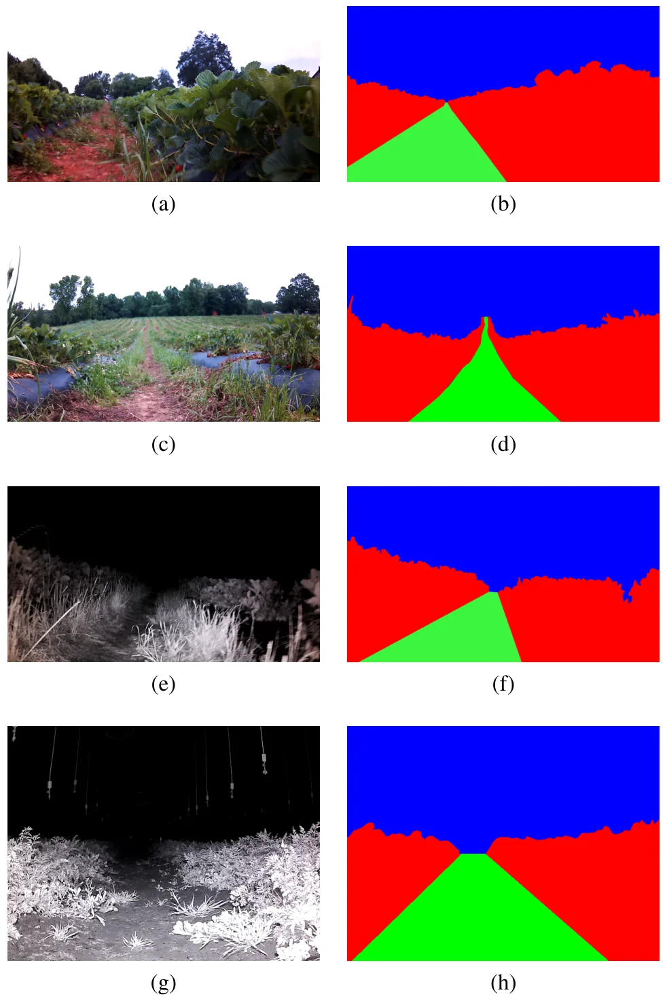
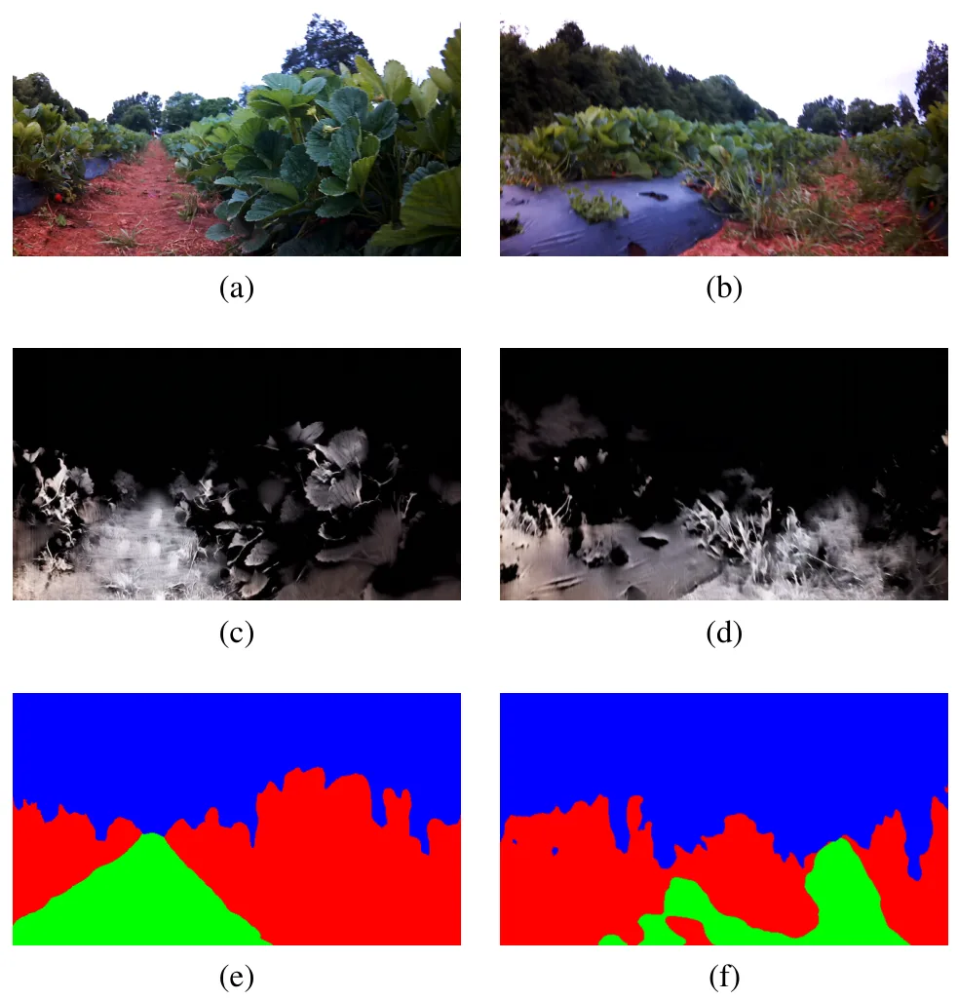
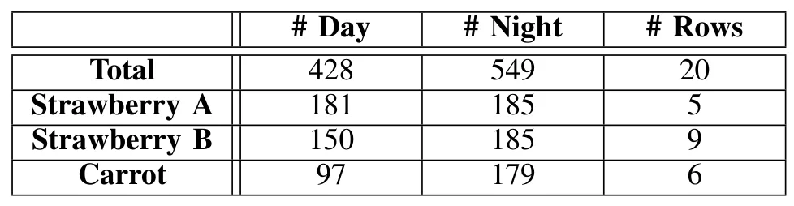
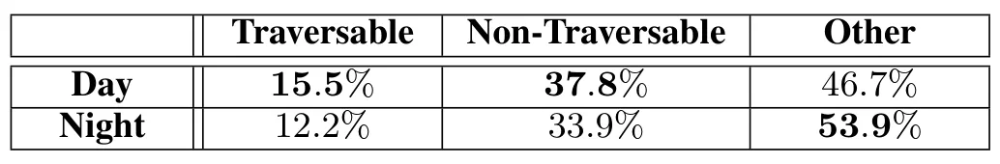
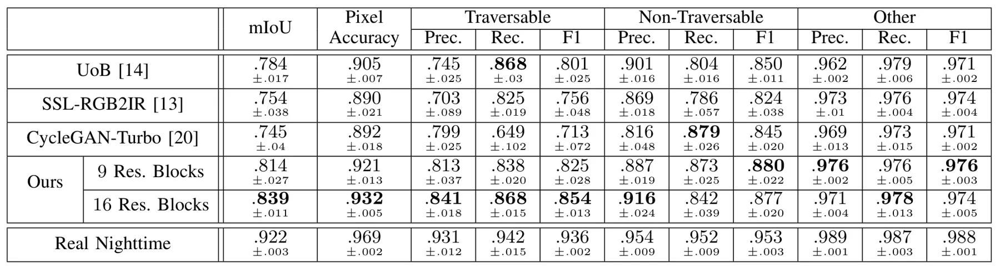
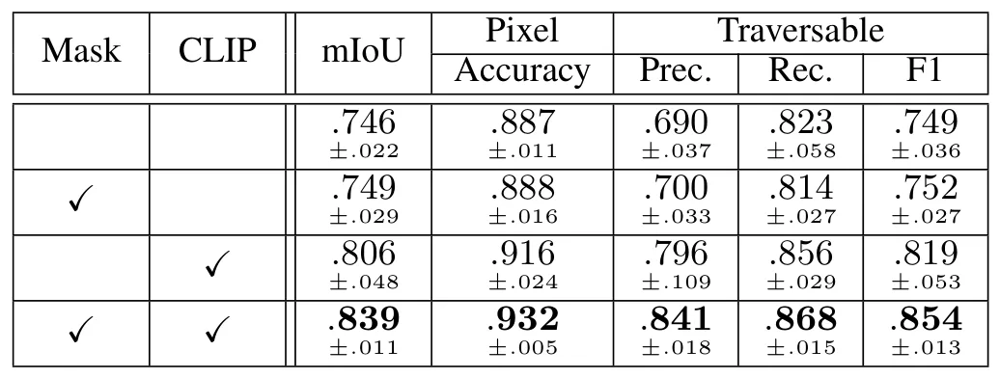

AgriNight：用于夜间视觉导航的无监督昼夜跨模态图像转换Enabling 24-hour Agricultural Robotics: Unsupervised Day-to-Night Cross-Modal Image Translation for Nighttime Visual Navigation
覆盖夜间视觉导航、跨模态鲁棒感知、公开数据和实机验证；但论文重点是语义分割，尚需确认定位/VO 在转换图像上的收益。
一句话工作总结
用 CLIP 语义约束和 NIR 可见性掩码，把昼间标注迁移到夜间农业机器人视觉导航。
摘要
本文提出无需像素级配对监督的昼间 RGB 到夜间近红外图像转换框架，使昼间语义标签可直接用于训练夜间农业导航感知模型。方法借助预训练 CLIP 保持转换前后的语义一致性，并用可见性掩码刻画 NIR 照明的有限有效距离。作者发布 AgriNight 数据集，包含 428 张昼间和 549 张夜间图像及像素级标注；下游语义分割优于图像转换基线，并完成实体机器人夜间实时自主导航实验。
While visual navigation has been extensively studied in agricultural robotics, most existing systems assume daytime conditions. In fact, deploying autonomous robots at night offers significant advantages, including 24-hour crop and soil monitoring, fruit harvesting, and nocturnal pest detection. Modern vision-based systems, however, rely heavily on large-scale well-annotated image datasets, which remains challenging to obtain for nighttime operation scenarios. To address this, we propose an unsupervised image translation framework that converts daytime plant-row RGB images into near-infrared (NIR) nighttime counterparts without requiring pixel-to-pixel supervision. This enables the direct reuse of daytime semantic labels for training nighttime perception models. In particular, by incorporating a pre-trained Contrastive Language-Image Pre-training (CLIP) model, the proposed framework is designed to preserve semantic consistency during day-to-night translation. Additionally, a visibility mask is introduced to account for the limited effective range of NIR illumination in nighttime scenes. We conduct comparative evaluations with state-of-the-art image translation baselines and demonstrate higher image qualities, as supported by improved performance in downstream semantic segmentation for nighttime visual navigation. For evaluation, we utilize AgriNight--a novel dataset comprising 428 daytime and 549 nighttime images collected using night-vision-equipped mobile robots in agricultural fields and manually annotated with pixel-wise semantic labels--and introduce it as the first benchmark for nighttime agricultural visual navigation. We also perform real-time autonomous navigation experiments with a physical robot operating at night. The data and code are available at: https://github.com/mamorobel/AgriNight.
中文解读摘录
- 作者：Robel Mamo, Rajitha de Silva, Grzegorz Cielniak, Taeyeong Choi
- 价值判断：直面夜间 NIR 导航标注不足问题，以无配对转换复用昼间语义标签，并且同时给出公开 benchmark 与实体机器人夜航验证。
- 技术要点：预训练 CLIP 约束语义一致性；visibility mask 表达 NIR 照明的有限有效距离。AgriNight 含 428 张昼间、549 张夜间像素级标注图像。
- 后续核查：当前收益主要由语义分割衡量；需验证转换是否保持关键点、线结构和时序光度一致性，能否真正改善 VO/SLAM。
- 链接：arXiv · 代码/数据
图表/页面预览

{kind=link}

{kind=link}

{kind=link}

{kind=link}

{kind=link}

{kind=link}

{kind=link}
